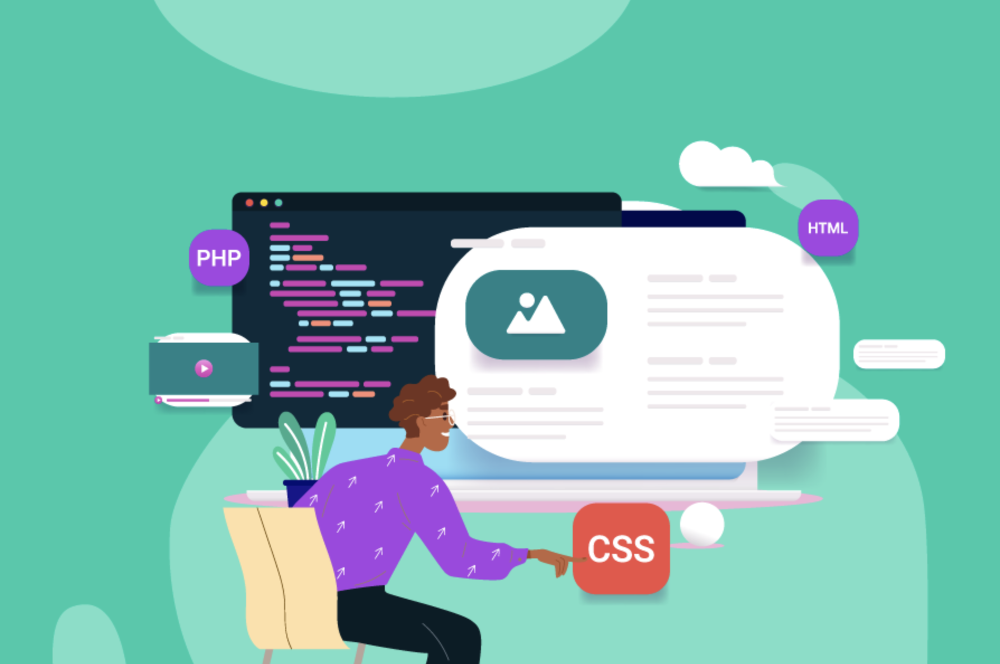

How to learn CSS & HTML in 10 steps
Cretied by Ahmad, Mars 22 - 2024
Whether you’re an aspiring web developer or website owner, you’ve likely heard of Cascading Style Sheets (CSS). This programming language can be used to customize the look and feel of a website. However, it can be complicated to learn without the right resources. Fortunately, there are plenty of ways you can learn CSS as a beginner. You can watch a step-by-step YouTube tutorial, take a comprehensive course, or even play virtual educational games. Any of these methods can help develop your CSS skills. In this article, we’ll explain what CSS is and why you might want to consider learning it. Then, we’ll show you three easy and accessible ways to learn CSS. Let’s get started!
A Brief Introduction to CSS
Before you start learning how to code a website, you’ll need to know a bit about what’s happening behind the scenes. Every website contains different files, or coding languages. Here’s how some of them work together:
- HTML: Defines the structure of a website.
- JavaScript: Defines the behavior of a website.
- CSS: Defines the appearance and style of a website.
CSS, or Cascading Style Sheets, is a stylesheet language that describes how HTML or XML documents are presented. It can be used to customize colors, fonts, positioning, and animation. Without CSS, websites would have bland, default features. By customizing CSS, you can build a unique web design with an engaging layout, format, and style.